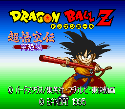
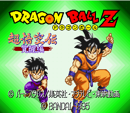
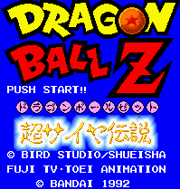
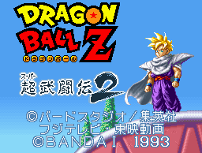
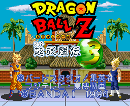

SNES Games - Dragonball Z

This is a role-playing game. A complete review is
available at Definitive Dragonball Z Video Games Page.

This is a role-playing game. A complete review is
available at Definitive Dragonball Z Video Games Page.

This is a role-playing game. A complete review is
available at Definitive Dragonball Z Video Games Page.
A complete description of how to play the game is available in the FAQ.
![[Dragonball Z: Super Butoden]](../images/SNES/dbz_butoden1.gif) This is the game that redefined the fighting game genre. It featured huge battlefields including the ability to fight in the
sky. Huge fireballs could be thrown at your opponent. With these unique features and a cast of popular anime characters,
it spawned two sequels that continued to improve the game control. A more complete description of the game and now
to play is contained in the FAQ.
A complete review is
available at Definitive Dragonball Z Video Games Page.
This is the game that redefined the fighting game genre. It featured huge battlefields including the ability to fight in the
sky. Huge fireballs could be thrown at your opponent. With these unique features and a cast of popular anime characters,
it spawned two sequels that continued to improve the game control. A more complete description of the game and now
to play is contained in the FAQ.
A complete review is
available at Definitive Dragonball Z Video Games Page.

This is the best game out of the Super Butoden series of Dragonball Z games. It features a story mode
where you can control one of four characters, a VS mode, and a tournament mode. The story mode does not really
require reading knowledge of Japanese; the choices you make essentially determine who you will fight throughout the
game. To find out how to play the game and what the storyline is (for two of the characters), read the
FAQ and partial translation.
A complete review is
available at Definitive Dragonball Z Video Games Page.

This is the last installment of the Super Butoden games. While the play control is vastly improved over the
previous version, it seems like the game was rushed into production. There is only a VS mode and a tournament mode.
The graphics are not as sharp as before especially the backgrounds. Read the FAQ
for more information on how to play the game. A complete review is
available at Definitive Dragonball Z Video Games Page.
© 1997 - Luis A. Cruz